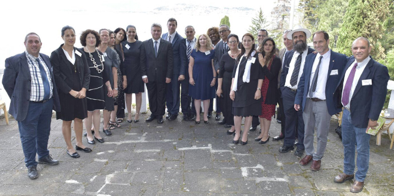
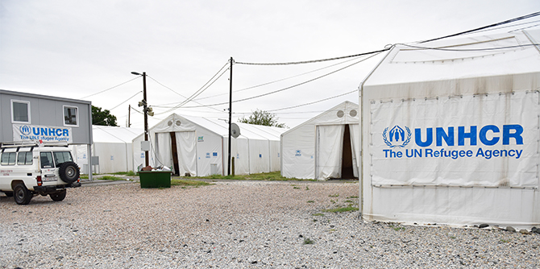

הסיור הלימודי נמשך שבוע (23-16 ביולי) ואפשר ל-16 הבוגרים שבקבוצה לחקור את נושא הפליטים וההגירה באירופה של היום מנקודת מבט גלובלית, תוך שילוב הזווית המקומית של גלי ההגירה שעברו במדינה. מקדוניה נבחרה בשל מיקומה המרכזי במסלול מעבר הפליטים בבלקן: במהלך משבר הפליטים באירופה, בשנים 2016-2015, עברו בה יותר מ-700,000 פליטים ומהגרים.
בסיור למדו הבוגרים על תופעת המהגרים במקדוניה מכמה זוויות: ניהול משברים, תהליכי קבלת החלטות, שינויי מדיניות וחקיקה, מגבלות כלכליות וחברתיות, מעורבות בינלאומית וגורמים משפיעים – כגון השינוי במדיניות האיחוד האירופי, היחסים עם יוון ובקשתה של מקדוניה להצטרף כחברה לאיחוד האירופי ולברית נאט"ו.
הסיור נפתח בביקור במחנה הפליטים של גבגליה שעל גבול יוון – נקודת הכניסה למהגרים שהגיעו בעיקר מסוריה ומעיראק דרך תורכיה ויוון. שם אירחו אותנו מנהל המחנה ומפקד כוח המשטרה המקומי. פגשנו את השרים החדשים במשרד התרבות, במשרד העבודה ומדיניות חברתית ובמשרד ההגנה. כן פגשנו את שר החוץ לשעבר, אשר הוביל את המשא ומתן עם מדינות האיחוד האירופי במהלך משבר המהגרים.

נשיא מקדוניה ד"ר גיאורג איבנוב מארח את בוגרי מנדל במעון הרשמי בעיר אוחריד
הקולות ששמענו היו הן רשמיים והן בלתי רשמיים. אחת מנקודות השיא הייתה מפגש בן שעתיים עם נשיא מקדוניה, ד"ר ג'ורג' איבנוב, אשר הציג לפנינו סקירה מפורטת של שאלת המהגרים בהקשר היסטורי והסביר את האתגרים שההגירה מספקת בהיבטים כלכליים, רב-תרבותיים ועתידיים. הקולות הבלתי רשמיים ששמענו היו אלו של המופתי של ביטולה (העיר השנייה בגודלה אחרי עיר הבירה), ונציגים מארגוני סיוע מקומיים ובינלאומיים אשר היו פעילים במחנות הפליטים ובעבודה עם מבקשי מקלט (היו מעט מאוד בקשות כאלה).
אף שההיסטוריה של הקהילה היהודית במקדוניה לא הייתה במוקד הביקור, הרי שסיפור הקהילה הקטנה, הקיימת מאז המאה ה-16 ופעילה עד היום, היה שזור לאורך כל הביקור. בעיר ביטולה ביקרנו בבית העלמין היהודי, שבו ישנה יוזמה של אזרחים צעירים לשקם את המקום. בעיר הבירה סקופיה ביקרנו באתר שממנו נשלחה לטרבלינקה במרס 1943 הקהילה היהודית של מקדוניה כולה – 7,144 מבוגרים וילדים. איש מהם לא שרד. ביקרנו במוזיאון השואה, מוזיאון שהקימה קרן השואה שהוקמה על-ידי ממשלת מקדוניה. כמו כן נפגשנו עם נשיאת הקהילה היהודית של מקדוניה, המונה כיום 200 איש, וסעדנו ארוחת שבת בבניין הקהילה.
הסיור הלימודי תוכנן בשיתוף פעולה עם השגריר דן אוריין, שגריר לא תושב למקדוניה ומנהל מחלקת הבלקנים במשרד החוץ. אוריין היה הכוח המניע מאחורי ארגון המפגשים רמי הדרג אשר אפשרו לקבוצה לשמוע קולות כה מגוונים. במהלך השבוע השתתפה הקבוצה גם בקבלת פנים רשמית שארגן השגריר לרגל יום העצמאות של ישראל.

{kind=link}
{kind=link}